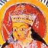

|
 C O N T E N T S | ||
| VOL. IV NO. 9/10 |
36 PAGES | OCTOBER 1999 |
| 3 | Lollipop Street by Tavleen Singh | Sumir Lal |
| 4 | Dalits in Modern India: Vision and Values edited by S.M. Michael | Chandra Bhan Prasad |
| 6 | Globalisation gone berserk. An essay | Sham Lal |
| 7 | English and the Discourses of Colonialism by Alastair Permycook | Rumina Sethi |
| 8 | The Colonial Other: Postcolonial Tbeory: A Critical Introduction by Leela Gandhi | Shiva Kumar Srinivasan |
| 10 | Innovative India: Science & Technology Review edited by L.K. Sharma & Sima Sharma | Shobhit Mahajan |
| 11 | Knowledge, Powerand Politics: Educational Institutions in India edited by Mushirul Hasan | S. C. Shukla |
| 13 | 1942 Earth directed by Deepa Mehta, based on Bapsi Sidhwa's novel Ice Candy Man | Srijana Mitra Das |
| 14 | All that Rushdie did not see, An inter-view with Bapsi Sldhwa | Anna Nadotti |
| 16 | The Company of Women by Khushwant Singh | Ishan Chaudhuri |
| 17 | Looking for Maya by Atima Srivastava and Awake While All the World is Asleep by Shree Ghatage | Ira Singh |
| 18 | The Book of Shadows by Namita Gokhale | Nilaujana S. Roy |
| 20 | The Flower Boy by Karen Roberts | Nayantara Patel |
| 21 | Devi: The Great Goddess-Female Divinity in South Asian Art edited by Vidya Dehejia | Kunal Chakravarti |
| 24 | Kalighat Painting: Images From a Changing World by Jyotindra Jain | Geeti Sen |
| 26 | The Death of Abbie Hoffman and Other Plays by Rana Bose and Mareeck the Legend and Jagannath by Arun Mukherjee | Ella Datta |
| 27 | Zaika: Kashmiri Pandit Cuisine by Sonya Atal Sapru | Maryam Reshi |
| 28 | Books on Indian design and architecture. An overview | Kishore Singh |
| 30 | Houses of Goa by Heta Pandit & Annabel Mascarenhas, photography by Ashok Koshy and with a Foreword by Gerard da Cunha | Darryl D'Monte |
| 32 | Documenting Chandigarh Volume I: The Indian Architecture of Pierre Jeanneret, Edwin Maxwell Fry and Jane Beverly Drew by Kiranjoshi | Vikram Lall |
| 33 | The Biblio Quiz | Joy Bhattacharjya |
| 34 | The Tiger Claw Tree by P A. Krishnan | M. Vijayalakshmi |
| COVER: Durga annihilating the demon Mahisasura, 19th century, watereolour on paper, Collection Hervvitz, from Kalighat Paintings: Images from a Changing World by Jyotindra Jain and published by Mapin Publishing, Ahmedabad. | ||